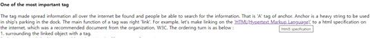

Br tag functions change a line of the article simply. So the tag doesn't need to use '' for closing the visual funtion. And if you repeat the tag 'br', the empty line would become two. The number of br tag's repeating will become the number of empty lines between the sentences or paragraphs.
Besides P tag functions making a new paragraph among sentences. It means to divide information's paragraph. That is why p tag is more important in most informational article. P tag can't control the gab of the two paragraphs differently from br tag. But, we can use css grammer in order to make more various editing.
For example of css, if I want to designate a room between the two tags, I can type in the next to starting 'p', ' style="margin-top:40px;"'.For making normally used list in the webpage, let's type the list consents, html, css, web on the top of this file with numbering and add br tag. It looks like a normal list but it was not real list. Then we can use list tag. The tag name of 'LIST' is 'LI'.
Let's delete 'br' on each line on the list. Instead of br, try to insert li with using'<>' and ''. When the consents of a list are more than 3, we can type li tag on each consents at once by clicking the cursor's location with keeping press of ctrl key. And I can make a couple of list on one web page. Then, we can use 'ul' tag which makes grouping each list. The ul tag is a parents' tag of the li tag. And li tag must have with ul tag without fail.The two tags have 'L' means 'list'. And 'OL' is a shorten tag of 'Ordered List' and 'UL' is a shorten tag of 'Unordered list'. When one customer asked to delete one of a list consents, if the asked consent has already used on the website around a million times, I have to work more than a couple of months even though I worked hard because the deletion of the consent made me change all the numburing of consents together. This kind of linked hard work would be solved with ol tag. If I changed ul to ol, the list was automatically changed according to their turn. Of course, the numbering of the list within the ol tag area would get their number automatically without any additional numbering.
We need a well-made structure for arranging lots of complicated information in one space for being shown neaty. We will change the title first of all. And we will use the most frequently used tags on the top in the world from now.
Title tag is similar to the cover of a book and when people search for the information, the title is one of the most important part.
This file is saved by the UTF way. When web browser opens the file for the users by the UTF way , all the consents will be shown without any problem.
So we have to insert ordering tag, 'META' after the title in order for the browser to open the file by the opening way the programer wants. For example, when we insert Hangul, some webpage will be shown strangely broken letters. Then, if we typed 'META' space 'CHARSET' with suitable method of opening this file.
The ordering tag means by using 'UTF-8' which is one of the character setting programs.
As you see the first two sentences, 'title and meta', pleased be noted that the two tags are explaining the file and documents.
And human being has some rules in this programing. One is to surround all the tags to explain the file or consents with 'Head' tag. With the same way, the last consents except tags inside head tag have to surround with 'Body' tag.
That is to say, any tag in a file should be under one of Head and Body tag without fail. And the upper levels' tag is surrounding all the tags in a file. That is 'HTML' tag.
And above the html tag, we normally type '!doctype html' tag additionally, which means the file has a html type's document.
The tag made spread information all over the internet be found and people be able to search for the information. That is 'A' tag of anchor. Anchor is a heavy string to be used in ship's parking in the dock. The main function of a tag was right 'link'.
For example, let's make linking on the 'HTML(Hypertext Markup Language)' to a html specification on the internet, which was a recommended document from the organization, W3C. The ordering turn is as below :
1. surrounding the linked object with a tag.
2. designate the linked internet address by using href(hypertext reference).
3. In order to show the linked page on the new window, we can add target grammer,"target=_blank" next to one space.
4. In order to show the linked page's title on the tool tip in advance, we can add title grammer, 'title"html5 specification"' next to one space. For the reference, the tool tip is a shown text box appeared near the linked part when the mouse is put on the linked part.
